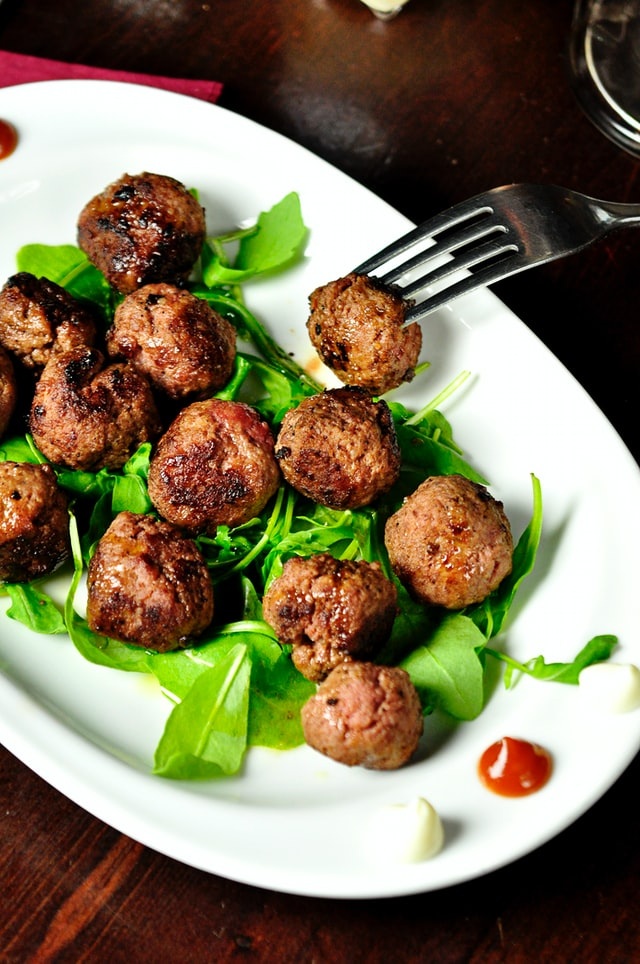

Entrees
Salads
-
Steak Au Poivre it is a classic french gastronomy dish, originated around the 19th century in the Normandy bistros.
A stunning 180g filet mignon with Belgian hop sprouts and Thai broccoli make up the dish very well spiced with green peppercorns.
-
Created next to the italian border, the Risotto À L'Espoir is a dish passed down from generation to generation by the Giancarlo family.
Seasoned with grains and cheese, with hints of rosemary bathed in Espérer wine, the risotto is complemented with small carrot slices and shredded chicken.
-
Three Royal Crabs cooked, boiled and marinated in low alcoholic wines.
For a memorable experience, a selection of five of the classic sauces from family Giancarlo that will raise the aroma and taste of the meal.
-
As a primary recipe of the family Giancarlo, the Poulet En Sauce Pasto is more than essential.
Delicious pieces of fried chicken enriched with the impeccable Pesto sauce make up one of the best dishes in our kitchen alongside with Spanish cabbages and other European vegetables.
-
Boulettes De Viande are the newest addition to our restaurant's menu.
The prestigious meatballs of the family Giancarlo have been modernized and are now 100% plant based. Served with a spicy Dutch salad, Boulettes de Viande are also served with two appetizing traditional sauces.
- $ 379
- $ 283
- $ 322
- $ 256
- $ 307
-

-
-
-
-

Where Europe and Asia come together

Pupil of the great chef Ferdinand Tickal, and trained for 7 years at the Milan Culinary Academy, Prasert Jaa is a formidable artist of contemporary gastronomy. With a vast journey, Jaa has built his story passing through several restaurants around the world, such as Cé La Vi, in Singapore, and Ossiano, in Dubai.
A close friend of Giancarlo brothers, Prasert has the skill and wisdom needed to unite French traditionality with Thai modernity. His extremely well-crafted and appetizingly harmonious dishes express the pinnacle of class in the family Giancarlo.